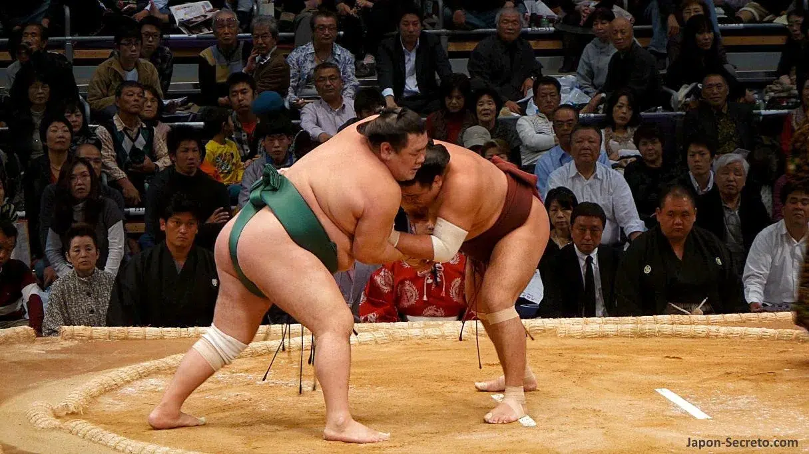

Tokio es la capital de Japón y una de las ciudades más grandes y pobladas del mundo, con una población que supera los 14 millones de habitantes en su área metropolitana. Situada en la costa este de la isla de Honshu, Tokio es el centro político, económico y cultural del país. Originalmente conocida como Edo, la ciudad cambió su nombre a Tokio en 1868, cuando se convirtió en la sede del gobierno imperial tras la Restauración Meiji. Es conocida por su impresionante skyline, su mezcla de tradición y modernidad, y por ser un núcleo de innovación tecnológica y tendencias culturales. En Tokio se encuentran importantes atracciones turísticas, como el templo Senso-ji, el Palacio Imperial, el distrito comercial de Shibuya y el famoso cruce de Shinjuku.
Lugares emblemáticos
 Tokio es una ciudad que combina tradición y modernidad. Puedes visitar el antiguo Templo Senso-ji en Asakusa, el majestuoso Palacio Imperial y el famoso Shibuya Crossing, símbolo de la vida urbana. La Torre de Tokio ofrece vistas panorámicas, mientras que Odaiba es una isla con centros comerciales y el Gundam gigante. Akihabara es el corazón de la cultura otaku y la tecnología. El Parque Ueno y el Shinjuku Gyoen National Garden ofrecen espacios verdes ideales para relajarse, y el Meiji Jingu es un santuario sintoísta en medio del bosque. Además, el Tsukiji Outer Market es perfecto para disfrutar de mariscos frescos. Cada lugar refleja una faceta única de Tokio. Mas información
Tokio es una ciudad que combina tradición y modernidad. Puedes visitar el antiguo Templo Senso-ji en Asakusa, el majestuoso Palacio Imperial y el famoso Shibuya Crossing, símbolo de la vida urbana. La Torre de Tokio ofrece vistas panorámicas, mientras que Odaiba es una isla con centros comerciales y el Gundam gigante. Akihabara es el corazón de la cultura otaku y la tecnología. El Parque Ueno y el Shinjuku Gyoen National Garden ofrecen espacios verdes ideales para relajarse, y el Meiji Jingu es un santuario sintoísta en medio del bosque. Además, el Tsukiji Outer Market es perfecto para disfrutar de mariscos frescos. Cada lugar refleja una faceta única de Tokio. Mas información
Deportes mas practicados en Tokyo
 Tokio es una ciudad apasionada por el deporte, con una gran variedad de actividades. El béisbol es muy popular, con equipos como los Yomiuri Giants y el Tokyo Dome como su sede. El fútbol también tiene su lugar con el FC Tokyo y el Tokyo Verdy. El sumo se celebra en el Ryogoku Kokugikan, mientras que el ciclismo ha crecido en popularidad, especialmente con el Tour de Japón. Las carreras de caballos y el famoso Maratón de Tokio son eventos destacados, y los deportes acuáticos como el surf y la vela se disfrutan en la Bahía de Tokio. Además, la ciudad es un centro para las artes marciales tradicionales como el karate, judo y kendo, y cuenta con instalaciones deportivas de alto nivel, como el Estadio Nacional de Japón. Mas informaciónGastronomía de Tokyo
 La gastronomía de Tokio es famosa por su diversidad y calidad. El sushi es emblemático, con lugares como Tsukiji y Ginza ofreciendo opciones de alta gama. El ramen de caldo de soja, especialmente el shoyu ramen, es otro plato icónico. El tempura y el yakitori son populares en restaurantes tradicionales e izakayas. Tokio también destaca por platos como el sukiyaki y el shabu-shabu, basados en carne cocinada en caldo caliente. La cocina de lujo kaiseki ofrece una experiencia culinaria única. El wagyu, carne de res japonesa de alta calidad, es otro manjar destacado. Además, los puestos de comida callejera sirven dulces como el dango, y los conbini ofrecen opciones rápidas y sabrosas como onigiri y bento. Mas información
La gastronomía de Tokio es famosa por su diversidad y calidad. El sushi es emblemático, con lugares como Tsukiji y Ginza ofreciendo opciones de alta gama. El ramen de caldo de soja, especialmente el shoyu ramen, es otro plato icónico. El tempura y el yakitori son populares en restaurantes tradicionales e izakayas. Tokio también destaca por platos como el sukiyaki y el shabu-shabu, basados en carne cocinada en caldo caliente. La cocina de lujo kaiseki ofrece una experiencia culinaria única. El wagyu, carne de res japonesa de alta calidad, es otro manjar destacado. Además, los puestos de comida callejera sirven dulces como el dango, y los conbini ofrecen opciones rápidas y sabrosas como onigiri y bento. Mas información
Cultura en Tokyo
 La cultura de Tokio es una mezcla única de tradición y modernidad. La ciudad combina templos históricos como el Senso-ji con modernos rascacielos y distritos tecnológicos como Shibuya. Es un epicentro de la cultura pop japonesa, destacando en lugares como Akihabara y Harajuku. Además, Tokio es un centro de arte y teatro, con museos como el Mori Art Museum y espectáculos de Kabuki. La gastronomía, que incluye sushi, ramen y tempura, es central en la cultura local. La ciudad celebra festivales tradicionales y valora profundamente la cortesía y el respeto en la vida cotidiana, todo mientras es un referente en tecnología e innovación. Mas información
La cultura de Tokio es una mezcla única de tradición y modernidad. La ciudad combina templos históricos como el Senso-ji con modernos rascacielos y distritos tecnológicos como Shibuya. Es un epicentro de la cultura pop japonesa, destacando en lugares como Akihabara y Harajuku. Además, Tokio es un centro de arte y teatro, con museos como el Mori Art Museum y espectáculos de Kabuki. La gastronomía, que incluye sushi, ramen y tempura, es central en la cultura local. La ciudad celebra festivales tradicionales y valora profundamente la cortesía y el respeto en la vida cotidiana, todo mientras es un referente en tecnología e innovación. Mas información